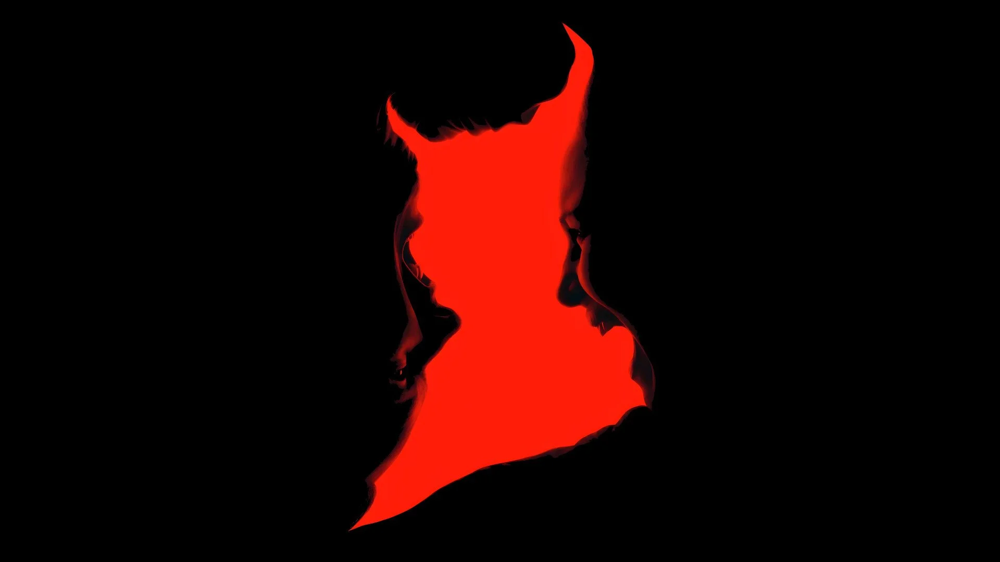
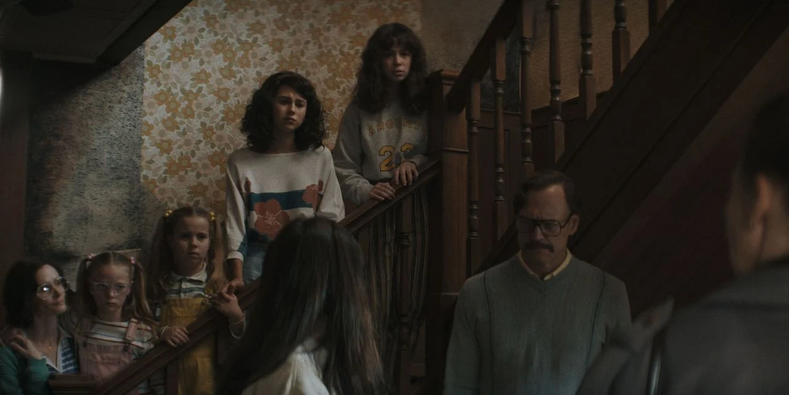

Invocação do Mal 4
O Ùltimo Ritual
Sinopse Completa
O renomado casal de investigadores paranormais Ed e Lorraine Warren enfrenta um dos casos mais aterrorizantes de suas carreiras. Quando uma família é aterrorizada por forças obscuras em sua nova casa, os Warren precisam confrontar horrores inimagináveis que testam sua fé e coragem. Entre rituais, aparições e mistérios sombrios, eles descobrem que a entidade por trás do mal é mais poderosa e cruel do que tudo que já enfrentaram.
Ficha Técnica
Elenco Principal
Ingressos
Galeria de Imagens


Curiosidades
- Este é o nono filme do universo Invocação do Mal, encerrando a saga dos Warren.
- O diretor Michael Chaves também dirigiu o clipe da canção "Bury a Friend" da cantora Billie Eilish.
Contato e Localização
Cinemas do Brasil a estrear o filme
Rio Branco (AC)
- Cine Rio Branco
- Cinemark Rio Branco
Maceió (AL)
- Cine Maceió Shopping
- Cinemark Maceió
Macapá (AP)
- Cine Macapá Plaza
- Cinemark Macapá
Manaus (AM)
- Cine Manaus Shopping
- Cinemark Manaus
Salvador (BA)
- Cine Salvador Shopping
- Cinemark Salvador
Fortaleza (CE)
- Cine Fortaleza Shopping
- Cinemark Fortaleza
Brasília (DF)
- Cine Brasília Shopping
- Cinemark Brasília
Vitória (ES)
- Cine Vitória Shopping
- Cinemark Vitória
Goiânia (GO)
- Cine Goiânia Shopping
- Cinemark Goiânia
São Luís (MA)
- Cine São Luís Shopping
- Cinemark São Luís
Cuiabá (MT)
- Cine Cuiabá Shopping
- Cinemark Cuiabá
Campo Grande (MS)
- Cine Campo Grande Shopping
- Cinemark Campo Grande
Belo Horizonte (MG)
- Cine Belo Horizonte Shopping
- Cinemark Belo Horizonte
Belém (PA)
- Cinemark Belém
- Cine Belém Shopping
João Pessoa (PB)
- Cine João Pessoa Shopping
- Cinemark João Pessoa
Curitiba (PR)
- Cine Curitiba Shopping
- Cinemark Curitiba
Recife (PE)
- Cine Recife Shopping
- Cinemark Recife
Teresina (PI)
- Cine Teresina Shopping
- Cinemark Teresina
Rio de Janeiro (RJ)
- Cine Rio Sul Shopping
- Cinemark Rio de Janeiro
Natal (RN)
- Cine Natal Shopping
- Cinemark Natal
Porto Alegre (RS)
- Cinemark Bourbon Ipiranga
- Cinemark Wallig
Porto Velho (RO)
- Cine Porto Velho Shopping
- Cinemark Porto Velho
Boa Vista (RR)
- Cine Boa Vista Shopping
- Cinemark Boa Vista
Florianópolis (SC)
- Cine Floripa Shopping
- Cinemark Florianópolis
São Paulo (SP)
- Cine São Paulo Shopping
- Cinemark São Paulo
Aracaju (SE)
- Cine Aracaju Shopping
- Cinemark Aracaju